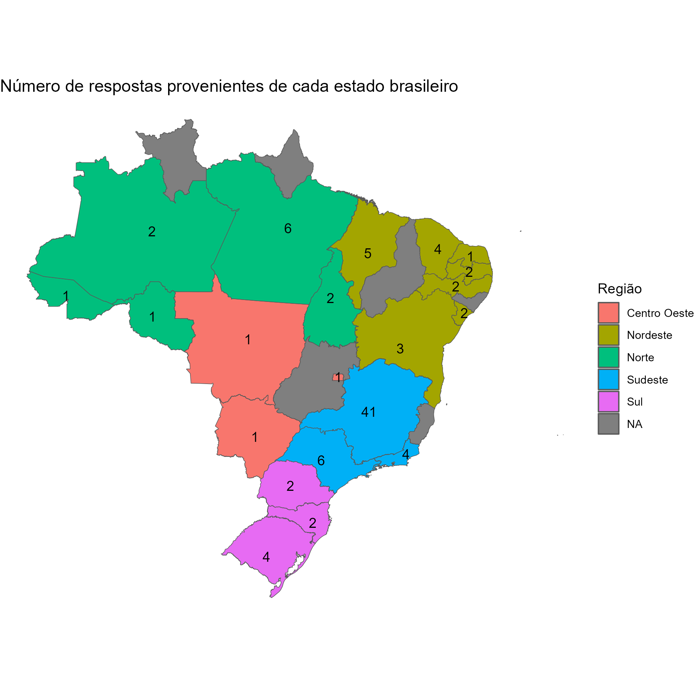
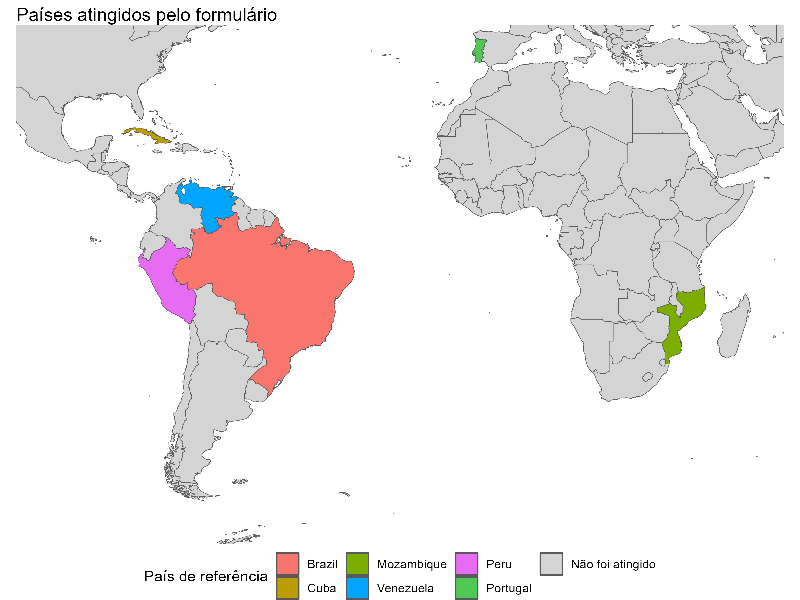
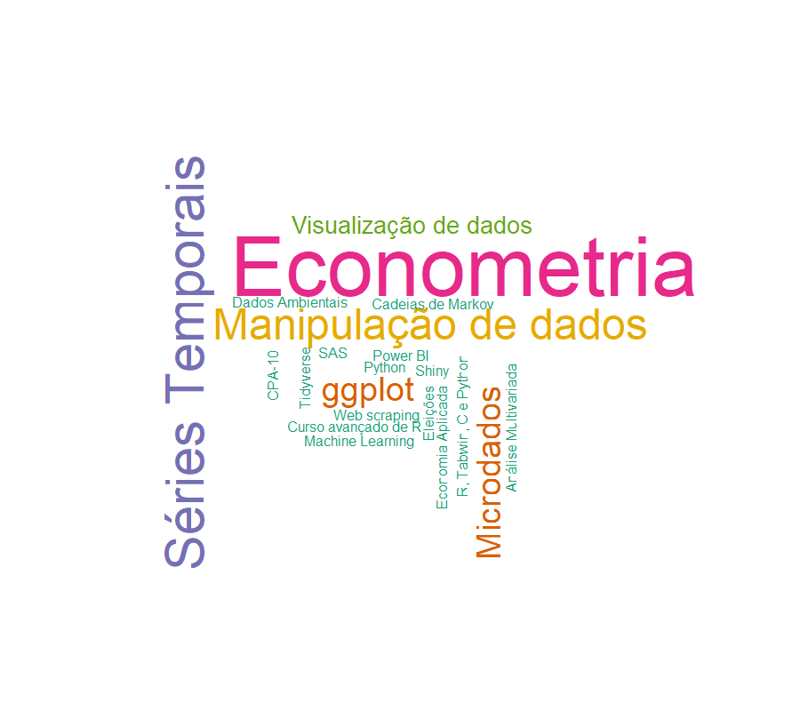

nrow(respostas)Esse post faz parte de um projeto meu, de um Curso Introdutório de R. Esse projeto já tem um ano, que venho aperfeiçoando-o, e a primeira vez que ele foi posto em prática (ou seja, a primeira vez que dei um curso da linguagem) foi no instituto de pesquisa onde trabalho, a Fundação João Pinheiro1. Foi um momento muito proveitoso, pois uma das melhores formas de se aprender uma matéria, é tentando ensiná-la para outras pessoas.
Aprimorei e venho aprimorando constatemente o meu conhecimento da linguagem R, e agora, uma nova oportunidade de ensinar essa linguagem, surgiu através de um convite da CORECON-MG2 Acadêmico. Com a ideia de compreendermos melhor as preferências do potencial público desse curso, nós lançamos um formulário de pesquisa no dia 10/10/2020.
Neste post, estarei analisando rapidamente as respostas que coletamos por esse formulário. Por motivos óbvios, as informações pessoais daqueles que responderam ao formulário, foram omitidas nesse artigo.
Tivemos inclusive pessoas de outros países!
No momento em que estou montando essa análise, tivemos no total, 122 respostas ao formulário. Mesmo sendo um número relativamente pequeno de pessoas, atingimos os mais diversos locais do país, abrangendo todas as cinco regiões do país.
[1] 122As respostas ao formulário não tinham um padrão bem definido, e por isso algumas respostas tiveram que ser ajustadas. Ao final desse ajuste, percebemos que pessoas de 61 instituições diferentes responderam ao formulário.
nrow(instituicoes)[1] 61A maior parte das instituições às quais os respondentes pertenciam, estão localizadas na região Sudeste, com 22 instituições. O Nordeste vem logo em seguida, com 16 insituições. Agora, as instituições que não foram designadas para alguma região (NA), são na verdade instituições de fora do Brasil. Isso significa que tivemos 5 respostas vindas de outros países, ao formulário de interesse no curso.
library(tidyverse)
instituicoes %>%
group_by(Regiao) %>%
summarise(contagem = n())# A tibble: 6 × 2
Regiao contagem
<chr> <int>
1 Centro Oeste 3
2 Nordeste 15
3 Norte 9
4 Sudeste 22
5 Sul 7
6 NA 5A maioria das pessoas que responderam ao formulário, provinham de instituições localizadas no estado Minas Gerais. Grande parte das respostas foram da UFOP (que é a instituição na qual estudo), totalizando 22 respostas. Além disso, não recebemos respostas de alguns estados, que estão marcados em cinza no gráfico abaixo:
library(geobr)
brasil <- read_state()resp_sum <- respostas %>%
select(Regiao, Instituicao, abbrev, Estado) %>%
group_by(Estado, Regiao) %>%
summarise(contagem = n())
brasil <- brasil %>%
left_join(resp_sum, by = c("name_state" = "Estado"))
ggplot(data = brasil) +
geom_sf(aes(fill = Regiao)) +
stat_sf_coordinates(
aes(label = contagem),
geom = "text"
) +
theme_void() +
labs(
title = "Número de respostas provenientes de cada estado brasileiro",
fill = "Região"
)
Talvez o mais impressionante de tudo isso, é que tivemos pessoas de outros países interessadas no curso. Cada um desses outros países obtiveram apenas uma assinatura, mas mesmo assim, é no mínimo interessante ver o quão longe fomos. Os países atingidos (fora o Brasil), e as respectivas instituições dos respondentes foram: Venezuela (Universidad de Carabobo); Cuba (Universidad de la Havana); Moçambique (ISRI - Instituto Superior De Relações Internacionais); e Peru (Universidad Nacional de Ingeniaria); Portugal (Universidade de Lisboa).
cores <- c(
"Brazil" = "#F8766D",
"Cuba" = "#BB9D00",
"Mozambique" = "#7CAE00",
"Venezuela" = "#00A5FF",
"Peru" = "#E76BF3",
"Portugal" = "#4fc953",
"Não foi atingido" = "#d4d4d4"
)
world$cores <- unname(cores[world$marca])
ggplot(data = world) +
geom_sf(aes(fill = cores)) +
coord_sf(xlim = c(-100, 50), ylim = c(-60, 40)) +
theme_void() +
labs(
title = "Países atingidos pelo formulário",
fill = "País de referência"
) +
theme(legend.position = "bottom") +
scale_fill_identity(
guide = "legend",
labels = names(cores),
breaks = unname(cores)
)
Assuntos requisitados
O R é uma linguagem que foi criada por estatísticos, e por isso, é uma linguagem especializada em análise de dados e estatística. Com isso, não é nenhuma surpresa que Econometria e Análise de Séries Temporais, tenham sido as principais sugestões e assuntos requisitados para o curso, pelas pessoas que responderam o formulário.
library(wordcloud)
library(RColorBrewer)
assuntos <- respostas %>%
filter(!is.na(Sugestao)) %>%
group_by(Sugestao) %>%
count() %>%
arrange(n)
cor <- brewer.pal(6, "Dark2")
names(cor) <- c("1", "3", "5", "8", "2", "4")
assuntos$color <- cor[as.character(assuntos$n)]
wordcloud(
words = assuntos$Sugestao,
freq = assuntos$n,
min.freq = 1,
max.words = 200,
ordered.colors = TRUE,
rot.per = 0.35,
use.r.layout = FALSE,
scale = c(2,0.5),
colors = assuntos$color
)
Áreas dos respondentes
A enorme maioria das pessoas que responderam eram alunos de graduação, ou bachareis já formados. Como pode ser observado logo abaixo, tivemos também algumas pessoas com algum nível de pós-graduação.
table(respostas$Nivel)Doutorado Graduação Mestrado
4 113 5 Curiosamente, das 9 pessoas que possuíam ou estavam fazendo pós-graduação (mestrado ou doutorado), 6 eram de alguma área da Saúde ou das Ciências Biológicas. Apenas uma dessas 9 pessoas, pertencia a área de Economia. Esse resultado faz sentido, visto que a linguagem R tem se expandido muito em algumas áreas como a epidemiologia e principalmente em análise genética, através de um conjunto de pacotes como o Bioconductor3.
De qualquer maneira, olhando para o número geral de respondentes, a grande maioria do público atingido pelo formulário, foram graduandos (ou bachareis já formados) em Economia, totalizando 65 pessoas.
respostas %>%
filter(Curso == "Economia") %>%
nrow()[1] 65Quanto às 52 pessoas restantes que não pertencem à area de Economia, as áreas atingidas foram bem diversas. Foram 5 pessoas de Agronomia e 4 pessoas de Geologia. As demais áreas marcadas em laranja abaixo, correspondem a 2 pessoas, enquanto todas as outras em ciano obtiveram apenas 1 respondente.
areas <- respostas %>%
filter(Curso != "Economia") %>%
group_by(Curso) %>%
count() %>%
arrange(n)
cor <- brewer.pal(5, "Dark2")
names(cor) <- unique(areas$n)
areas$color <- unname(cor[as.character(areas$n)])
wordcloud(
words = areas$Curso,
freq = areas$n,
min.freq = 1,
max.words = 200,
ordered.colors = TRUE,
rot.per = 0.35,
use.r.layout = FALSE,
scale = c(2,0.5),
color = areas$color
)